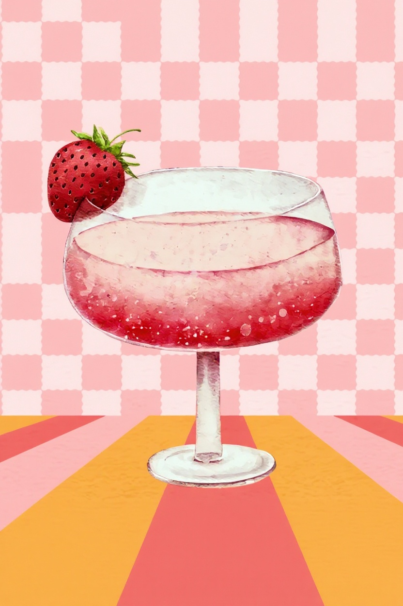

Strawberry
DAIQUIRI
The Daiquiri, the classic cocktail from which the Strawberry Daiquiri is derived, was invented in the early 20th century in Cuba by American engineer Jennings Cox. It was named after Daiquiri beach near Santiago de Cuba. The original Daiquiri was a simple mix of rum, lime, and sugar.
Ingredients
1902
2 oz White Rum | 1 oz Fresh Lime Juice | 1/2 oz Simple Syrup | 1/2 cup Fresh Strawberries | 1 cup Crushed Ice
Invented in Cuba around